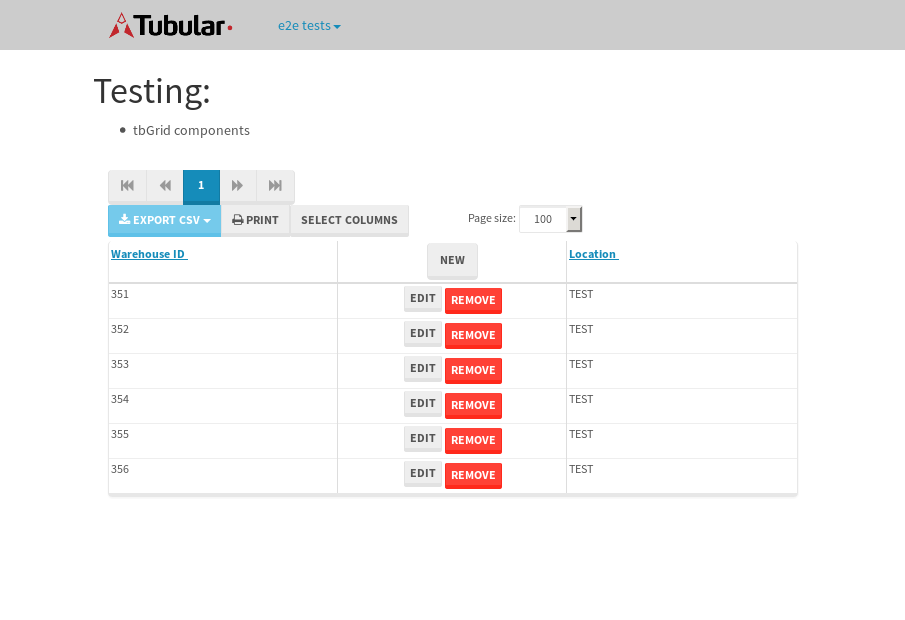

tbColumn.Grid Sorting - 176.195sTests: 5Skipped: 0Failures: 3 should sort data in ascending order then on descending order when sorting by Order Id column - 43.948sExpected '1' to be '500'.✗Expected '20' to be '481'.✗Tests passed: 50.00%should order data in ascending order when click-sorting an unsorted text column - 22.938sTests passed: 100.00%should order data in descending order when click-sorting an ascending-sorted text column - 42.965sExpected 'Advanced Technology Systems' to be 'Vesta'.✗Tests passed: 0.00%should order data in ascending order when click-sorting an unsorted date column - 23.192sTests passed: 100.00%should order data in descending order when click-sorting twice an unsorted date column - 43.147sExpected '12/30/2015' to match /1\/01\/2016/.✗Tests passed: 0.00%
tbEmptyForm - 2.361sTests: 3Skipped: 0Failures: 0 should have an empty required field - 0.71sTests passed: 100.00%should not be able to click on save - 0.03sTests passed: 100.00%should load default value for numeric field - 0.026sTests passed: 100.00%
Tubular Filters.tbColumnFilter - 95.978sTests: 12Skipped: 0Failures: 0 should cancel filtering when clicking outside filter-popover - 7.198sTests passed: 100.00%should disable Value text-input for "None" filter - 5.544sTests passed: 100.00%should disable apply button for "None" filter - 5.605sTests passed: 100.00%should decorate popover button when showing data is being filtered for its column - 11.038sTests passed: 100.00%should correctly filter data for the "Equals" filtering option - 7.909sTests passed: 100.00%should correctly filter data for the "Not Equals" filtering option - 7.28sTests passed: 100.00%should correctly filter data for the "Contains" filtering option - 7.277sTests passed: 100.00%should correctly filter data for the "Not Contains" filtering option - 7.107sTests passed: 100.00%should correctly filter data for the "Starts With" filtering option - 6.236sTests passed: 100.00%should correctly filter data for the "Not Starts With" filtering option - 6.647sTests passed: 100.00%should correctly filter data for the "Ends With" filtering option - 6.224sTests passed: 100.00%should correctly filter data for the "Not Ends With" filtering option - 6.751sTests passed: 100.00%
Tubular Filters.tbColumnDateTimeFilter - 124.017sTests: 12Skipped: 0Failures: 0 should cancel filtering when clicking outside filter-popover - 6.243sTests passed: 100.00%should disable Value text-input for "None" filter - 5.569sTests passed: 100.00%should disable apply button for "None" filter - 5.779sTests passed: 100.00%should clear filtering when clicking on Clean button - 16.309sTests passed: 100.00%should decorate popover button when showing data is being filtered for its column - 11.039sTests passed: 100.00%should correctly filter data for the "Equals" filtering option - 6.485sTests passed: 100.00%should correctly filter data for the "Not Equals" filtering option - 6.356sTests passed: 100.00%should correctly filter data for the "Between" filtering option - 11.156sTests passed: 100.00%should correctly filter data for the "Greater-or-equal" filtering option - 10.813sTests passed: 100.00%should correctly filter data for the "Greater" filtering option - 10.849sTests passed: 100.00%should correctly filter data for the "Less-or-equal" filtering option - 10.756sTests passed: 100.00%should correctly filter data for the "Less" filtering option - 10.7sTests passed: 100.00%
Tubular Filters.tbColumnOptionsFilter - 77.19sTests: 3Skipped: 0Failures: 0 should cancel filtering when clicking outside filter-popover - 7.112sTests passed: 100.00%should decorate popover button when showing data is being filtered for its column - 10.57sTests passed: 100.00%should filter column-elements in accordance to the selected filter when selecting a single option - 47.485sTests passed: 100.00%
Tubular Filters.tbTextSearch - 44.511sTests: 5Skipped: 0Failures: 0 min-chars is not set - 0.066sTests passed: 100.00%should filter data in searchable-column customer name to matching inputted text, starting from 3 characters - 5.863sTests passed: 100.00%should filter data in searchable-column shipper city to matching inputted text, starting from 3 characters - 11.007sTests passed: 100.00%should show clear button when there is inputted text only - 5.561sTests passed: 100.00%should clear filtering when clicking clear button - 15.401sTests passed: 100.00%
tbForm related components.tbCheckboxField - 5.983sTests: 2Skipped: 0Failures: 0 should save changes on "SAVE" - 2.736sTests passed: 100.00%should discard changes on "CANCEL" - 1.949sTests passed: 100.00%
tbForm related components.tbDropDownEditor - 7.74sTests: 5Skipped: 0Failures: 0 should set initial input value to the value of "value" attribute when defined - 0.796sTests passed: 100.00%should show the component name value in a label field when "showLabel" attribute is true - 1.557sTests passed: 100.00%should show a help field equal to this attribute, is present - 0.723sTests passed: 100.00%should submit modifications to item/server when clicking form "Save" - 2.932sTests passed: 100.00%should NOT submit modifications to item/server when clicking form "Cancel" - 1.162sTests passed: 100.00%
tbForm related components.tbTextArea - 10.704sTests: 7Skipped: 0Failures: 0 should set initial input value to the value of "value" attribute when defined - 0.747sTests passed: 100.00%should be invalidated when the number of chars is not in the range of "min" and "max" attributes - 1.21sTests passed: 100.00%should show the component name value in a label field when "showLabel" attribute is true - 1.194sTests passed: 100.00%should show a help field equal to this attribute, is present - 0.824sTests passed: 100.00%should require the field when the attribute "required" is true - 1.245sTests passed: 100.00%should submit modifications to item/server when clicking form "Save" - 3.334sTests passed: 100.00%should NOT submit modifications to item/server when clicking form "Cancel" - 1.433sTests passed: 100.00%
tbForm related components.tbDateEditor - 10.146sTests: 6Skipped: 0Failures: 0 should set initial date value to the value of "value" attribute when defined - 0.739sTests passed: 100.00%should be invalidated when the date is not in the range of "min" and "max" attributes - 1.184sTests passed: 100.00%should show the component name value in a label field when "showLabel" attribute is true - 0.692sTests passed: 100.00%should show a help field equal to this attribute, is present - 0.651sTests passed: 100.00%should submit modifications to item/server when clicking form "Save" - 1.866sTests passed: 100.00%should NOT submit modifications to item/server when clicking form "Cancel" - 3.939sTests passed: 100.00%
tbForm related components.tbTypeaheadEditor - 18.616sTests: 7Skipped: 0Failures: 0 should show an options list when there is an API-info/component entered-data - 2.7sTests passed: 100.00%should select the option clicked - 1.827sTests passed: 100.00%should show a "delete" button when an option/match is selected, and delete the option if button is clicked - 2.474sTests passed: 100.00%should show a label value equal to the component name when "showLabel" attribute is true - 1.478sTests passed: 100.00%should require a value when "require" attribute is true - 2.553sTests passed: 100.00%should submit modifications to item/server when clicking form "Save" - 5.055sTests passed: 100.00%should NOT submit modifications to item/server when clicking form "Cancel" - 1.23sTests passed: 100.00%
tbForm related components.tbSimpleEditor - 10.792sTests: 9Skipped: 0Failures: 0 should set initial input value to the value of "value" attribute when defined - 0.622sTests passed: 100.00%should be invalidated when the number of chars is not in the range of "min" and "max" attributes - 1.069sTests passed: 100.00%should show the component name value in a label field when "showLabel" attribute is true - 0.705sTests passed: 100.00%should set input placeholder to the value of "placeholder" attribute - 1.079sTests passed: 100.00%should validate the control using the "regex" attribute, if present - 0.814sTests passed: 100.00%should show a help field equal to this attribute, is present - 0.725sTests passed: 100.00%should require the field when the attribute "required" is true - 0.81sTests passed: 100.00%should submit modifications to item/server when clicking form "Save" - 3.181sTests passed: 100.00%should NOT submit modifications to item/server when clicking form "Cancel" - 1.164sTests passed: 100.00%
tbForm related components.tbNumericEditor - 10.585sTests: 7Skipped: 0Failures: 0 should set initial component value to the value of "value" attribute when defined - 0.651sTests passed: 100.00%should be invalidated when the entered number is not in the range of "min" and "max" attributes - 1.181sTests passed: 100.00%should show the component name value in a label field when "showLabel" attribute is true - 0.788sTests passed: 100.00%should show a help field equal to this attribute, is present - 0.69sTests passed: 100.00%should require the field when the attribute "required" is true - 0.819sTests passed: 100.00%should submit modifications to item/server when clicking form "Save" - 4.679sTests passed: 100.00%should NOT submit modifications to item/server when clicking form "Cancel" - 1.147sTests passed: 100.00%
tbForm Connection Error NoModelKey - 2.137sTests: 1Skipped: 0Failures: 0 tbForm connection error functionality - 0.004sTests passed: 100.00%
tbForm Connection Error NoServerUrl - 2.04sTests: 1Skipped: 0Failures: 0 tbForm connection error functionality - 0.002sTests passed: 100.00%
tbGridComponents - 29.585sTests: 6Skipped: 0Failures: 1 should add item with newRow method - 3.423sTests passed: 100.00%should add item with newRow method and cancel action - 0.277sTests passed: 100.00%should update item with tbSaveButton - 3.089sTests passed: 100.00%should NOT update item on cancel Update action - 0.446sTests passed: 100.00%should remove item with tbRemoveButton - 20.36sExpected 6 not to be 6, 'should remove the row from the table'.✗Tests passed: 50.00%should NOT remove item on cancel Remove action - 0.606sTests passed: 100.00%
tbGridPager.navigation buttons - 2.946sTests: 1Skipped: 0Failures: 0 should perform no action when clicking on the numbered navigation button corresponding to the current-showing results page - 0.961sTests passed: 100.00%
tbGridPager.navigation buttons.first/non-last results page related functionality - 0.737sTests: 2Skipped: 0Failures: 0 should disable "first" and "previous" navigation buttons when in first results page - 0.091sTests passed: 100.00%should enable "last" and "next" navigation buttons when in a results page other than last - 0.646sTests passed: 100.00%
tbGridPager.navigation buttons.last/non-first results page related functionality - 1.247sTests: 2Skipped: 0Failures: 0 should disable "last" and "next" navigation buttons when in last results page - 0.628sTests passed: 100.00%should enable "first" and "previous" navigation buttons when in a results page other than first - 0.619sTests passed: 100.00%
tbGridPager.page navigation - 5.024sTests: 5Skipped: 0Failures: 0 should go to next results page when clicking on next navigation button - 1.473sTests passed: 100.00%should go to previous results page when clicking on previous navigation button - 1.145sTests passed: 100.00%should go to last results page when clicking on last navigation button - 0.915sTests passed: 100.00%should go to first results page when clicking on first navigation button - 0.606sTests passed: 100.00%should go to corresponding results page when clicking on a numbered navigation button - 0.883sTests passed: 100.00%
tbGridPagerInfo - 5.091sTests: 2Skipped: 0Failures: 0 should show text in accordance to numbered of filter rows and current results-page - 2.167sTests passed: 100.00%should show count in footer - 0.018sTests passed: 100.00%
tbPageSizeSelctor - 15.241sTests: 4Skipped: 0Failures: 0 should filter up to 10 data rows per page when selecting a page size of "10" - 3.301sTests passed: 100.00%should filter up to 20 data rows per page when selecting a page size of "20" - 2.967sTests passed: 100.00%should filter up to 50 data rows per page when selecting a page size of "50" - 3.38sTests passed: 100.00%should filter up to 100 data rows per page when selecting a page size of "100" - 4.221sTests passed: 100.00%
tbSingleForm - 13.139sTests: 8Skipped: 1Failures: 1 should load correct info - 0s***Skipped***Tests passed: 0%should change customer name - 1.791sTests passed: 100.00%should save it - 2.152sExpected '' to be 'Saved'.✗Tests passed: 50.00%should clear the inputs - 1.859sTests passed: 100.00%should update - 2.159sTests passed: 100.00%should reset editor - 1.768sTests passed: 100.00%should not save if not Changes - 1.699sTests passed: 100.00%should not be able to click on save - 1.709sTests passed: 100.00%


{kind=link}